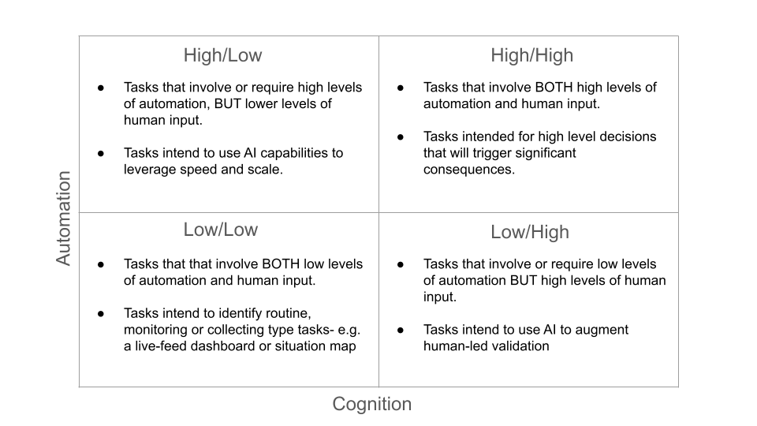

Decision Making in the Age of the Machine
How AI-driven Automation Magnifies the Value of Human Judgment in War
In part 1 of this article I described automation momentum, the increasing velocity and volume of data processed by AI, which threatens to subordinate human judgment to machine logic on the modern battlefield. In this article I offer a solution in the principle of cognitive integration.
The Principle of Cognitive Integration
Automation momentum is the imperceptible terrain of the modern battlefield, and affects the nature of warfare itself, at the strategic, operational, and tactical levels. It is a fundamental rule that should guide how organizations should approach and think about the conduct of operations.
Thus, a new principle of warfare is required for conflict in the age of AI: the Principle of Cognitive Integration. The Principle of Cognitive Integration is the effective blending of human will and judgment with the speed, data processing power, and predictive capabilities of artificial intelligence.
Commanders must deliberately designate which decisions require human judgment unconstrained by machine speed, and which leverage automation for velocity, never allowing automated recommendations to compress reflection time below the threshold needed to assess consequences beyond the model's dataset.
Cognitive integration requires commanders to map where automation resides at each echelon and how it shapes subordinate decision space. At the strategic level, this means understanding how a single AI-informed parameter adjustment cascades through planning systems, potentially binding lower commanders to choices invisible in their orders. At tactical and operational levels, cognitive integration demands linking automated systems to unfiltered ground truth, preventing headquarters from commanding through algorithmic abstractions rather than battlefield reality.
Commanders must identify where adversaries rely on automation versus judgment and attack the seams. Disrupt enemy algorithms where they constrain decisions; force situations outside of the scope of their models. By denying adversaries cognitive integration while maintaining their own, commanders collapse enemy decision-making processes.
This deliberate cyberization of command empowers commanders to maintain strategic control and ensures they understand where decisions to trigger leverage lie in their processes. Commanders should address this principle relative to their specific organizations and functions. The Cognitive Integration Matrix (CIM) illustrates one possible way to frame this visually: the AI-driven model calculates probability while the human manages consequence.

Tradeoffs of Cognitive Integration
Cognitive integration presents advantageous capabilities in the form of leverage to key decision makers, but at the cost of risks to mission command, operational continuity, and perception of risk.
Leverage
Automation momentum magnifies the impact of a single human judgment to a degree previously unimaginable through its characteristic of leverage. Leverage is the single most advantageous capability that automation momentum provides the commander. Leverage displaces friction for the commander by providing him the capability to take action without the need for subordinates to the level required in the past, with instantaneous speed.
Where the traditional operations process distributes critical choices and actions across a chain of command hierarchy, diluting the impact of any one leader, the AI-driven automated environment concentrates it. A decision that once required a sequence of orders from a higher headquarters, down to commanders, down to their staffs, and finally down to the platoon leader facing the real-world situation can now be triggered by an individual command, unleashing a high-velocity chain of automated consequences. When that cost of action drops to zero, the value of decision skyrockets.
There are two forms of leverage to consider: kinetic and cognitive.
A simple example of kinetic leverage is the capability of a commander to simply press a button to activate a drone fleet. In the summer of 2020, AI in Project Maven did just that when it gathered intel, identified and selected a target, and upon human approval ordered an M142 HIMARS to strike it in live fire. Four years later it continued doing the same in actual conflict in Yemen, Iraq, and Syria.
Cognitive leverage, on the other hand, is the automation of the tools of representation that we use to communicate and direct our organizations. Our text outputs, visualizations, and code have mastered this — things like our dashboards and slides. AI's presence in our workflows is now ubiquitous; one would be challenged to find a staffer who does not have ChatGPT or Claude open in a browser tab as they write emails, construct plans, or search for information.
In the recent Air Force Experiment 3 exercise, operators used AI tools to accelerate targeting decisions and reduce cognitive load, with the system providing real-time recommendations that reshaped how quickly a single team could move through the kill chain. These recommendations highlight a form of cognitive leverage present today: a human adjusting a single parameter — an estimated adversary range, a target priority, a logistics constraint — can cascade instantly through models, dashboards, and planning tools, shaping the perceptions and therefore the decisions of leaders across an entire headquarters and the subordinate echelons below it.
The risks for a commander wielding leverage are the three areas automation momentum impacts most adversely: mission command, exploitation, and risk.
The Erosion of Mission Command
Automation momentum threatens mission command — the leadership philosophy of decentralized execution based on commander's intent — by concentrating decision making power back at the headquarters.
The weight of a single commander's decision with automation momentum has such strength and can carry such ramifications through its characteristic of leverage that it may inadvertently have shaping impacts on commanders down-echelon, disrupting available decisions of subordinate leaders closest to the real-world fight. Decisions that were once obviously appropriate to be made for a given operation may now be hidden in the automated-triggers of our tools. The greater the automation applied to an operation, the greater the degree to which mission command is eroded.
Exploitation Amplification
Automation momentum's re-weighting of exploitation impacts planning. The seemingly infinite insight provided by AI tools can blind us from the fact that the insight is limited within the model that the tools have produced. This creates blind spots that, when exploited, can have catastrophic impacts on the operation.
Military planning is a formal process, codified in doctrine, taught in military education, and formally evaluated in training. Standard planning processes such as the Military Decision Making Process or the Joint Planning Process, already designed to optimize within known parameters now augmented with AI tools, become vulnerable to these blind spots.
The telescoping capability of AI-powered insight that this presents the staffer is enormous: one can summon almost infinite detail instantaneously for anything within the model's dataset, but at the expense of consideration for anything outside of it. The Hubble Space Telescope can show us galaxies millions of light years away with perfect clarity, but it cannot show what lies just beyond the frame.
Risk Distortion
Perception of risk incurs the largest impact of automation momentum. Risk distortion means the limits of the model's dataset shapes the decision maker's sense of operational risk.
As a result, the commander's attention is drawn to the insights a powerful yet limited AI has provided. This can cause the commander to lose sight of important decisions, and invest his time and resources into lesser ones. The model can calculate the probability of success, but only a human can weigh the consequence of failure.
Risk distortion directly impacts the what, when, and where of force deployment, as well as the mission statement given to the battlefield commander. The "winnability" of wars for the battlefield commander will depend on the strategist's understanding of this aspect of automation momentum.
The Way Forward
Implementation of this principle of warfare should be treated as both a tremendous and fleeting opportunity given the explosive growth of modern tech. Immediate changes involve relooking how we operationalize red teaming and design methodology in staffs at the strategic, operational, and tactical echelons as a means of breaking out of the paradigm presented to us by our systems, while maintaining creativity to conduct operations in novel ways. DOTMLPF-P structural changes must accommodate staff changes to balance AI-driven systems as they continue to be introduced in the force.
Because of the scope of organizations automation momentum touches, formal dialogue between senior uniformed leaders, industry partners, and policy makers is needed now. Given the speed at which automation is transforming warfare, we cannot afford to wait to decide how to balance machine speed with human judgment; the sooner we can address it, the greater our ability will be to shape it. Future victory will belong not to the commander with the most intelligent AI, but to the commander that can still think freely alongside it.